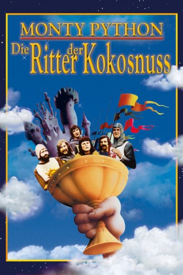
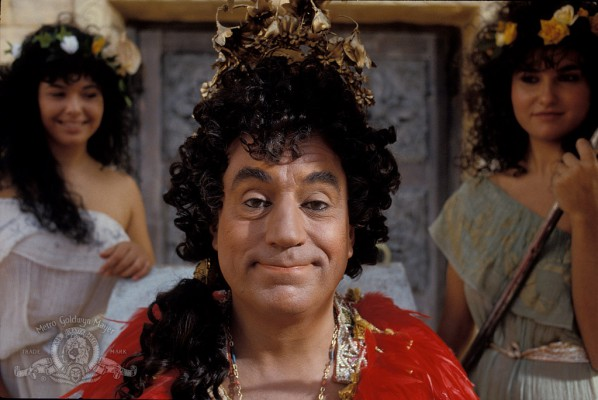
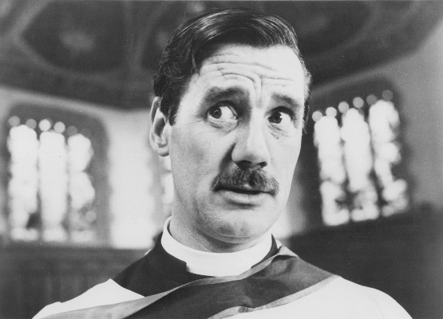
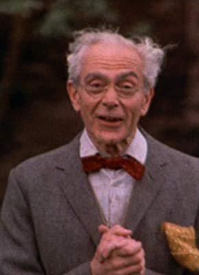

#1198 Die Ritter der Kokosnuß
Alternativ: Monty Python and the Holy Grail
 
 IMDB-Wertung: 8.3 / 10
IMDB-Wertung: 8.3 / 10  IMDB-TOP-Platzierung: 110
IMDB-TOP-Platzierung: 110  Metascore: 93
Metascore: 93 
Im frühen Mittelalter durchwandert König Artus das noch relativ unbewohnte England mit seinen edlen Recken, um das Reich von den einfallenden Franzosen zu befreien und den sagenhaften Heiligen Gral zu erobern. Leider handelt es sich bei seiner Truppe um eine Ansammlung irrer Trottel und sein Unternehmen erleidet schnell zahlreiche Rückschläge.
Jahr: 1975
Dauer: 91 Minuten
FSK: 12
Land: England Studio: EMI FilmsTonspuren: DD5.1 - ,
Untertitel: Deutsch,
Auflösung: 1080p (1808x1080) Größe: 7198 MB
Genre: Abenteuer, Komödie, Fantasy
Regisseur:  Terry Gilliam, Terry Jones
Terry Gilliam, Terry Jones
Drehbuch: Graham Chapman, John Cleese, Eric Idle, Terry Gilliam, Terry Jones
Soundtrack:
Darsteller:
- Graham Chapman als King Arthur / Voice of God / Middle Head / Hiccoughing Guard
 John Cleese als Second Swallow-Savvy Guard / The Black Knight / Peasant 3 / Sir Lancelot the Brave / Taunting French Guard / Tim the Enchanter
John Cleese als Second Swallow-Savvy Guard / The Black Knight / Peasant 3 / Sir Lancelot the Brave / Taunting French Guard / Tim the Enchanter Eric Idle als Dead Collector / Peasant 1 / Sir Robin the Not-Quite-So-Brave-as-Sir Launcelot / First Swamp Castle Guard / Concorde / Roger the Shrubber / Brother Maynard
Eric Idle als Dead Collector / Peasant 1 / Sir Robin the Not-Quite-So-Brave-as-Sir Launcelot / First Swamp Castle Guard / Concorde / Roger the Shrubber / Brother Maynard Terry Gilliam als Patsy / Green Knight / Old Man from Scene 24, Bridgekeeper / Sir Bors / Animator / Gorrilla Hand
Terry Gilliam als Patsy / Green Knight / Old Man from Scene 24, Bridgekeeper / Sir Bors / Animator / Gorrilla Hand-  Terry Jones als Dennis's Mother / Sir Bedevere / Left Head / Prince Herbert / Cartoon Scribe
-  Michael Palin als First Swallow-Savvy Guard / Dennis / Peasant 2 / Right Head / Sir Galahad the Pure / Narrator / King of Swamp Castle / Brother Maynard's Brother / Leader of The Knights Who Say NI!
 Connie Booth als The Witch
Connie Booth als The Witch- Carol Cleveland als Zoot / Dingo
- Sandy Johnson als Knight of Ni / Villager at Witch Burning / Musician at Wedding / Monk / Knight in Battle
- Mary Allen als Girl in Castle Anthrax
- Neil Innes als First Monk / Singing Minstrel / Page Crushed by the Rabbit / Peasant #4
- Bee Duffell als Old Crone
-  John Young als Dead Body / Historian Frank
- Rita Davies als Historian's Wife
- Avril Stewart als Dr. Piglet
- Sally Kinghorn als Dr. Winston
- Mark Zycon als Prisoner
- Elspeth Cameron als Girl in Castle Anthrax
- Mitsuko Forstater als Girl in Castle Anthrax
- Sandy Rose als Girl in Castle Anthrax
- Romilly Squire als Musician at Wedding / Villager at Witch Burning
- Joni Flynn als Girl in Castle Anthrax
- Alison Walker als Girl in Castle Anthrax
- Loraine Ward als Girl in Castle Anthrax
- Anna Lanski als Girl in Castle Anthrax
- Sally Coombe als Girl in Castle Anthrax
- Vivienne MacDonald als Girl in Castle Anthrax
- Yvonne Dick als Girl in Castle Anthrax
- Daphne Darling als Girl in Castle Anthrax
- Fiona Gordon als Girl in Castle Anthrax
- Gloria Graham als Girl in Castle Anthrax
- Judy Lamb als Girl in Castle Anthrax
- Tracy Sneddon als Girl in Castle Anthrax
- Sylvia Taylor als Girl in Castle Anthrax
- Joyce Pollner als Girl in Castle Anthrax
- Margarita Doyle als Peasant , uncredited
- Charles Knode als Camp Guard / Robin's Minstrel , uncredited
- Zack Matalon als Guard who Falls into Barrels , uncredited
- William Palin als Sir Not-Appearing-in-this-Film , uncredited
- Tom Raeburn als Guard Eating Apple , uncredited
- Roy Forge Smith als Inspector End of Film , uncredited
- Maggie Weston als Page-turner , uncredited
Datei: X:\Person\Monty Python\Ritter der Kokosnuß, Die (1975, FSK12, 1808x1080).mkv seit 02.06.2015
Festplatte: HD Collection-7+mehr(A-Z)+Person
 Es gibt insgesamt 11 Filme in der Gruppe 'Person\Monty Python'
Es gibt insgesamt 11 Filme in der Gruppe 'Person\Monty Python'